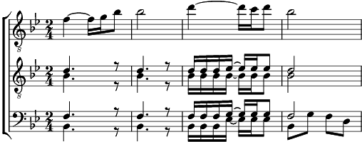

1. Hush, hush somebody's calling my name (3x)
Oh my Lord, Oh my Lord what shall I do?
2. I'm so glad that trouble don't last always (3x)
Oh my Lord what shall I do, what shall I do?
3. I'm so glad I've got my ligion in time (3x)
Oh my Lord what shall I do?